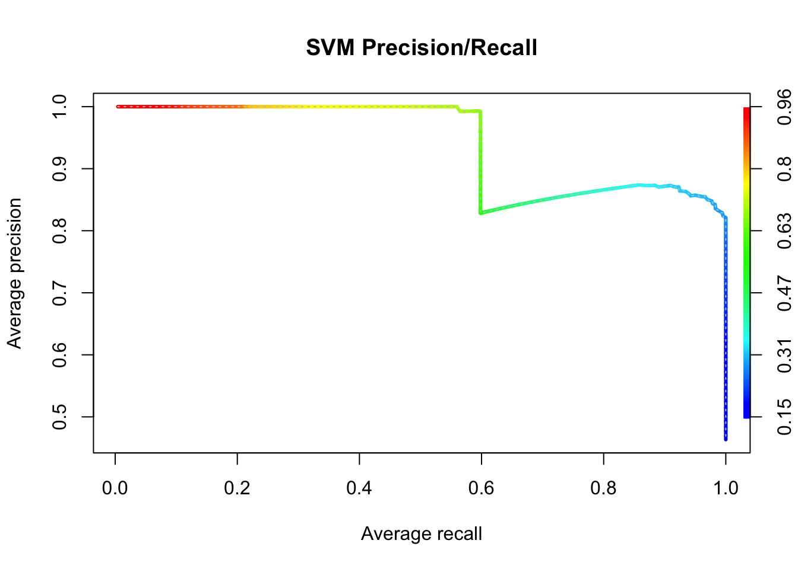
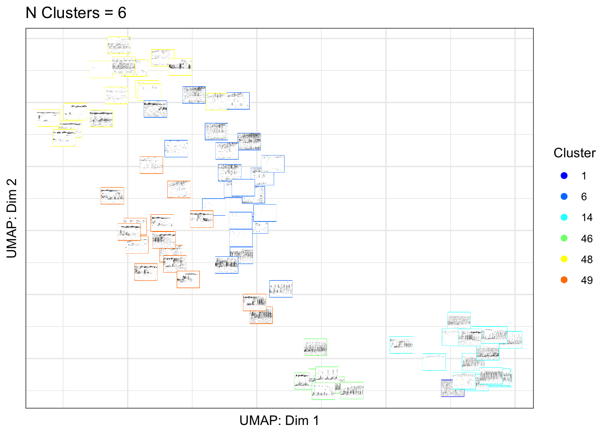
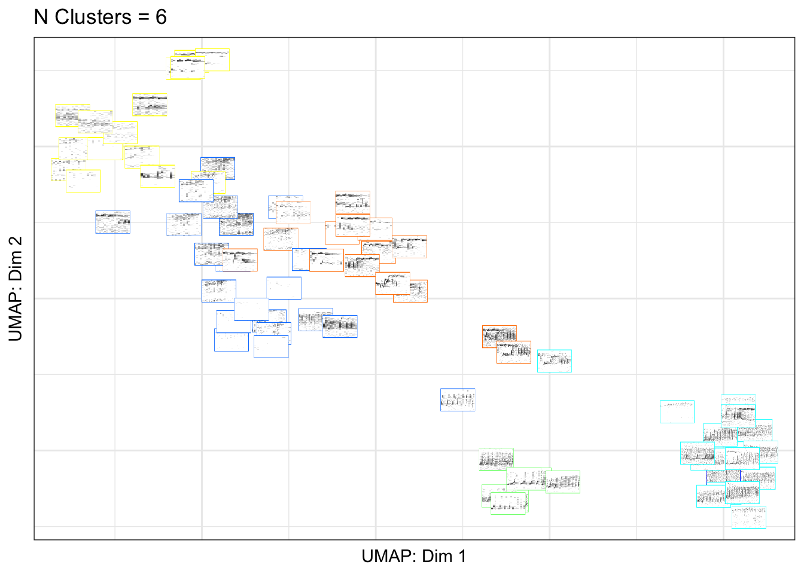

1 Getting started
1.1 You can install the development version from GitHub with:
# install.packages("devtools")
# devtools::install_github("DenaJGibbon/gibbonR")
library(gibbonR)
#> Loading required package: stringr
#> Loading required package: e1071
#> Loading required package: randomForest
#> randomForest 4.7-1
#> Type rfNews() to see new features/changes/bug fixes.
#> Loading required package: tuneR
#> Loading required package: seewave2 Part 1. Prepare Training Data
In ‘gibbonR’ there are two ways that you can format your training data. The first can be a set of labelled .wav clips with the class indicated in the name of the file (e.g., ‘gibbon_01.wav’ and ‘noise_01.wav’). The second is to have a folder of selection tables created in Raven Pro (K. Lisa Yang Center for Conservation Bioacoustics) and a folder with the associated ‘.wav’ files. For the second approach there must be an annotation column indicating the call type and it is assumed that all signals of interest are annotated, and the rest of the files contain only background noise.
2.1 Part 1A. Training Data with Labeled .wav clips
2.1.1 Read in clips and calculate MFCCs
TrainingWavFilesDir <-
"/Users/denaclink/Desktop/RStudio Projects/gibbonR/data/MultipleSoundClasses/"
trainingdata <- gibbonR::MFCCFunction(input.dir=TrainingWavFilesDir, min.freq = 400, max.freq = 1600,win.avg="TRUE")
trainingdata$class <- as.factor(trainingdata$class)2.1.2 Compare Random Forest and Support Vector Machine for Supervised Classification
trainingdata$class <- as.factor(trainingdata$class)
ml.model.svm <- e1071::svm(trainingdata[, 2:ncol(trainingdata)], trainingdata$class, kernel = "radial",
cross = 25,
probability = TRUE)
print(paste('SVM accuracy',ml.model.svm$tot.accuracy))
#> [1] "SVM accuracy 88"
ml.model.rf <- randomForest::randomForest(x=trainingdata[, 2:ncol(trainingdata)], y = trainingdata$class)
print(ml.model.rf)
#>
#> Call:
#> randomForest(x = trainingdata[, 2:ncol(trainingdata)], y = trainingdata$class)
#> Type of random forest: classification
#> Number of trees: 500
#> No. of variables tried at each split: 13
#>
#> OOB estimate of error rate: 13.33%
#> Confusion matrix:
#> female.gibbon leaf.monkey noise solo.gibbon class.error
#> female.gibbon 17 0 2 1 0.1500000
#> leaf.monkey 0 11 4 0 0.2666667
#> noise 0 0 18 2 0.1000000
#> solo.gibbon 0 1 0 19 0.05000002.2 Part 1B. Training Data with Raven Selection Tables
2.2.1 Prepare training data from labeled annotations
# Specify the folder where the training data will be saved
TrainingDataFolderLocation <- "/Users/denaclink/Desktop/RStudio Projects/gibbonR/data/TrainingDataFromRavenSelectionTables"
# Directory with annotated selection tables
AnnotatedSelectionTables <- list.files("/Users/denaclink/Desktop/RStudio Projects/gibbonR/data/SelectionTables/GibbonTrainingSelectionTables/",
full.names = T)
# Directory with corresponding .wav files
AnnotatedWaveFiles <- list.files("/Users/denaclink/Library/CloudStorage/Box-Box/gibbonRSampleFiles/GibbonTrainingFiles/",full.names = T)
AnnotatedWaveFilesShort <- list.files("/Users/denaclink/Library/CloudStorage/Box-Box/gibbonRSampleFiles/GibbonTrainingFiles/",full.names = F)
AnnotatedWaveFilesShort <- str_split_fixed(AnnotatedWaveFilesShort,pattern = '.wav', n=2)[,1]
# Loop to cut out the corresponding annotations into short clips
for(i in 1: length(AnnotatedSelectionTables)){
# Read in selection table
TempSelectionTable <- read.delim2(AnnotatedSelectionTables[i])
# Find the corresponding soundfile
SoundFileIndex <- which(str_detect(AnnotatedSelectionTables[i],AnnotatedWaveFilesShort))
TempAnnotateWave <- readWave(AnnotatedWaveFiles[SoundFileIndex])
ShortSoundClips <- lapply(1:nrow(TempSelectionTable),
function(j) extractWave(TempAnnotateWave,
from= as.numeric(TempSelectionTable[j,]$Begin.Time..s.),
to=as.numeric(TempSelectionTable[j,]$ End.Time..s.),
xunit = c("time"),plot=F,output="Wave"))
# Write wave files to folder
for(k in 1:length(ShortSoundClips)){
TempClip <- ShortSoundClips[[k]]
WavFileName <- paste(TrainingDataFolderLocation,'/female.gibbon_', k, '.wav',sep="")
writeWave(TempClip,WavFileName,extensible = F)
}
}2.2.2 Prepare noise training data from files without target signal
# Specify the folder where the training data will be saved
TrainingDataFolderLocation <- "/Users/denaclink/Desktop/RStudio Projects/gibbonR/data/TrainingDataFromRavenSelectionTables/"
# Directory with annotated selection tables
NoiseSelectionTables <- list.files("/Users/denaclink/Desktop/RStudio Projects/gibbonR/data/SelectionTables/NoiseSelectionTables/",
full.names = T)
# Directory with corresponding .wav files
NoiseWaveFiles <- list.files("/Users/denaclink/Library/CloudStorage/Box-Box/gibbonRSampleFiles/NoiseFiles/",full.names = T)
NoiseWaveFilesShort <- list.files("/Users/denaclink/Library/CloudStorage/Box-Box/gibbonRSampleFiles/NoiseFiles/",full.names = F)
NoiseWaveFilesShort <- str_split_fixed(NoiseWaveFilesShort,pattern = '.wav', n=2)[,1]
for(i in 1:length(NoiseSelectionTables)){
# Find the corresponding soundfile
SoundFileIndex <- which(str_detect(NoiseSelectionTables[i],NoiseWaveFilesShort))
DetectBLED(input=NoiseWaveFiles[SoundFileIndex],
min.freq = 400,
max.freq = 1600,
noise.quantile.val=0.3,
file.type='wav',
spectrogram.window =512,
pattern.split = ".wav",
min.signal.dur = 3,
max.sound.event.dur = 12,
output = "wav",
wav.output = "TRUE",
output.dir = TrainingDataFolderLocation,
swift.time=TRUE,
time.start=06,
time.stop=11,
write.csv.output=TRUE,
verbose=TRUE,
random.sample=FALSE)
}2.2.3 Now read in clips based on Raven Selection tables and calculate MFCCs
TrainingWavFilesDir <-
"/Users/denaclink/Desktop/RStudio Projects/gibbonR/data/TrainingDataFromRavenSelectionTables/"
trainingdata <- gibbonR::MFCCFunction(input.dir=TrainingWavFilesDir, min.freq = 400, max.freq = 1600,win.avg="TRUE")
trainingdata$class <- as.factor(trainingdata$class)2.2.4 Compare Random Forest and Support Vector Machine for Supervised Classification
trainingdata$class <- as.factor(trainingdata$class)
ml.model.svm <- e1071::svm(trainingdata[, 2:ncol(trainingdata)], trainingdata$class, kernel = "radial",
cross = 25,
probability = TRUE)
print(paste('SVM accuracy',ml.model.svm$tot.accuracy))
#> [1] "SVM accuracy 98.1132075471698"
ml.model.rf <- randomForest::randomForest(x=trainingdata[, 2:ncol(trainingdata)], y = trainingdata$class)
print(ml.model.rf)
#>
#> Call:
#> randomForest(x = trainingdata[, 2:ncol(trainingdata)], y = trainingdata$class)
#> Type of random forest: classification
#> Number of trees: 500
#> No. of variables tried at each split: 13
#>
#> OOB estimate of error rate: 3.77%
#> Confusion matrix:
#> female.gibbon noise class.error
#> female.gibbon 25 1 0.03846154
#> noise 1 26 0.037037043 Part 2. Run the detector/classifier
3.1 Part 2a. Feature extraction
# Specify the folder where the training data will be saved
TrainingDataFolderLocation <- "/Users/denaclink/Desktop/RStudio Projects/gibbonR/data/TrainingDataFromRavenSelectionTables/"
TrainingDataMFCC <- MFCCFunction(input.dir= TrainingDataFolderLocation, min.freq = 400, max.freq = 1600,win.avg="TRUE")
TrainingDataMFCC$class <- as.factor(TrainingDataMFCC$class)3.2 Part 2b. Run DetectClassify
TestFileDirectory <- '/Users/denaclink/Library/CloudStorage/Box-Box/gibbonRSampleFiles/GibbonTestFiles'
OutputDirectory <- "/Users/denaclink/Desktop/RStudio Projects/gibbonR/data/DetectAndClassifyOutput"
DetectAndClassify(input=TestFileDirectory,
input.type='directory',
feature.df=TrainingDataMFCC,
model.type.list=c('SVM','RF'),
tune = TRUE,
short.wav.duration=300,
target.signal = c("female.gibbon"),
min.freq = 400, max.freq = 1600,
noise.quantile.val=0.15,
time.window.number =3,
n.windows = 9, num.cep = 12,
spectrogram.window =160,
pattern.split = ".wav",
min.signal.dur = 3,
max.sound.event.dur = 25,
maximum.separation =1,
probability.thresh.svm = 0.15,
probability.thresh.rf = 0.15,
wav.output = "TRUE",
output.dir =OutputDirectory,
swift.time=TRUE,time.start=5,time.stop=10,
write.csv.output=FALSE,verbose=TRUE,
random.sample='NA')
#> [1] "Machine learning in progress..."
#> [1] "SVM in progress..."
#> [1] "SVM accuracy 98.1132075471698"
#> Time difference of 1.661945 secs
#> [1] "RF in progress..."
#>
#> Call:
#> randomForest(x = feature.df[, 2:ncol(feature.df)], y = feature.df$class)
#> Type of random forest: classification
#> Number of trees: 500
#> No. of variables tried at each split: 13
#>
#> OOB estimate of error rate: 5.66%
#> Confusion matrix:
#> female.gibbon noise class.error
#> female.gibbon 25 1 0.03846154
#> noise 2 25 0.07407407
#> Time difference of 0.06267691 secs
#> [1] "Classifying for target signal female.gibbon"
#> [1] "Computing spectrogram for file S11_20180217_080003 1 out of 1"
#> [1] "Running detector over sound files"
#> [1] "Creating datasheet"
#> [1] "System processed 7201 seconds in 15 seconds this translates to 492 hours processed in 1 hour"4 Part 3. Calculate performance metrics
4.1 Part 3a. Prepare data for performance metrics
# Set location of test file selection tables
input.dir.text.files <- "/Users/denaclink/Desktop/RStudio Projects/gibbonR/data/SelectionTables/GibbonTestSelectionTables"
Annotatedfiles <- list.files(input.dir.text.files,full.names = T)
ListOfAnnotatedFilesShort <- list.files(input.dir.text.files,full.names = F)
nslash <- str_count(Annotatedfiles,pattern = '/')[1]+1
snames <- str_split_fixed(Annotatedfiles,pattern = '/',n=nslash)[,nslash]
all.detections <- data.frame()
for(x in 1:length(Annotatedfiles)){
temp.table <- read.delim2(Annotatedfiles[x],fill = T,header =T)
file.name <- str_split_fixed(snames[x],pattern = '[.]',n=2)[,1]
recorder <- str_split_fixed(file.name,pattern='_',n=3)[,1]
date <- str_split_fixed(file.name,pattern='_',n=3)[,2]
time <- str_split_fixed(file.name,pattern='_',n=3)[,3]
if(nrow(temp.table >0)){
temp.table.updated <- cbind.data.frame(file.name,recorder,date,time,temp.table)
} else {
temp.row <- as.data.frame(t(rep('NA',ncol(temp.table))))
colnames(temp.row) <- colnames(temp.table)
temp.table.updated <- cbind.data.frame(file.name,recorder,date,time,temp.row)
}
all.detections <- rbind.data.frame(all.detections,temp.table.updated)
}4.2 Part 3b. Identify true and false positives
OutputDirectory <- "/Users/denaclink/Desktop/RStudio Projects/gibbonR/data/DetectAndClassifyOutput"
all.combinedprecision.recall.randomiter <- data.frame()
range.secs.start <- 6
range.secs.end <- 6
### Detections using band-limited energy summation
gibbondetects <- OutputDirectory
list.ml <- list.files(gibbondetects, full.names = T, pattern='.wav')
# Need to focus on gibbons for this validation
nslash <- str_count(list.ml[[1]],'/')+1
list.ml.signals <- str_split_fixed(list.ml,pattern = '/',n=nslash)[,nslash]
list.ml.signals <- str_split_fixed(list.ml.signals,pattern = '_',n=5)[,4]
list.ml <-
list.ml[which(list.ml.signals=='female.gibbon')]
ml.detection.df <- data.frame()
for(y in 1:length(list.ml)){
L.wav <- list.ml[[y]]
n.slash <- str_count(L.wav, pattern = "/")[1] + 1
det.file.name <- str_split_fixed(L.wav,"/",n=n.slash)[,n.slash]
det.file.name <- str_split_fixed(det.file.name,".wav",n=2)[,1]
file.name <- paste(str_split_fixed(det.file.name,"_",n=5)[,1],str_split_fixed(det.file.name,"_",n=5)[,2],
str_split_fixed(det.file.name,"_",n=5)[,3], sep='_')
det.date <- str_split_fixed(det.file.name,"_",n=5)[,2]
det.time <- str_split_fixed(det.file.name,"_",n=5)[,3]
det.swift <- str_split_fixed(det.file.name,"_",n=5)[,1]
det.time.start <- as.numeric(str_split_fixed(det.file.name,"_",n=9)[,6])
det.time.end <- as.numeric(str_split_fixed(det.file.name,"_",n=9)[,7])
probability <- str_split_fixed(det.file.name,"_",n=8)[,8]
ml.algorithm <- str_split_fixed(det.file.name,"_",n=7)[,5]
detections.df <- cbind.data.frame(file.name,det.swift, det.date, det.time,det.time.start,det.time.end,probability,ml.algorithm)
ml.detection.df <- rbind.data.frame(ml.detection.df,detections.df)
}
recall.snr.all.df <- data.frame()
for(x in 1:nrow(ml.detection.df)){
all.detections.subset <- ml.detection.df[x,]
validate.detect.subset <-subset(all.detections,file.name==as.character(all.detections.subset$file.name))
validate.detect.subset$Begin.Time..s. <- as.numeric(validate.detect.subset$Begin.Time..s.)
min.start.time <- as.numeric(all.detections.subset$det.time.start)-range.secs.start
max.start.time <- as.numeric(all.detections.subset$det.time.start)+range.secs.end
detections.ml <- subset(validate.detect.subset, Begin.Time..s.>min.start.time & Begin.Time..s.< max.start.time)
if(nrow(detections.ml)>0){
all.detections.subset$class.label <- '1'
} else{
all.detections.subset$class.label <- '-1'
}
recall.snr.all.df <- rbind.data.frame(recall.snr.all.df,all.detections.subset)
}
4.3 Part 3c. Calculate and plot performance metrics using ‘ROCR’
library(ROCR)
auc.df <- data.frame()
performance.df <- data.frame()
ml.index <- unique(recall.snr.all.df$ml.algorithm)
for(m in 1:length(ml.index)){
temp.subset <-
subset(recall.snr.all.df,
ml.algorithm==ml.index[m])
predictions <- as.numeric(temp.subset$probability)
labels <- (temp.subset$class.label)
pred <- prediction(predictions, labels)
perf <- performance(pred, "rec", "prec")
perfauc <- performance(pred, "aucpr")
Precision <- perf@x.values[[1]]
Recall <- perf@y.values[[1]]
Threshold <- perf@alpha.values[[1]]
AUC <- perfauc@y.values[[1]]
perfF1 <- performance(pred, "f")
F1 <- perfF1@y.values[[1]]
print(AUC)
ml.algorithm <- ml.index[m]
tempauc <- cbind.data.frame(AUC,ml.algorithm)
auc.df <- rbind.data.frame(auc.df,tempauc)
temp.performance <- cbind.data.frame(Precision,Recall,Threshold,F1,ml.algorithm)
performance.df <- rbind.data.frame(performance.df,temp.performance)
perf <- performance(pred, "prec", "rec")
plot(perf,
avg= "threshold",
colorize=TRUE,
lwd= 3,
main= paste(ml.index[m],'Precision/Recall'))
plot(perf,
lty=3,
col="grey78",
add=TRUE)
}
#> [1] 0.5831775
#> [1] 0.9388036
5 Part 4. Data visualization
5.1 Part 4a. Create a UMAP plot colored by class
library(gibbonR)
library(ggpubr)
#> Loading required package: ggplot2
#>
#> Attaching package: 'ggplot2'
#> The following object is masked from 'package:randomForest':
#>
#> margin
UMAPBiplotAddSpectrograms(input.dir.Focal="/Users/denaclink/Desktop/RStudio Projects/gibbonR/data/MultipleSoundClasses/",output.dir.Focal="/Users/denaclink/Desktop/RStudio Projects/gibbonR/data/MultipleSoundClasses/Thumbnails/",add.spectrograms=TRUE,min.freq=400,max.freq=1600,main="UMAP Plot")
#> [1] "Step 1 Calculating MFCCs"
#> [1] "Step 2 Creating biplot"
#> [1] "Step 3 Creating Spectrograms"
#> [1] "/Users/denaclink/Desktop/RStudio Projects/gibbonR/data/MultipleSoundClasses/Thumbnails/ already exists"
#> [1] "Step 4 Adding Spectrograms to Plot " ## Part 4b. Create a UMAP plot colored by affinity propagation clustering
library(gibbonR)
library(ggpubr)
library(apcluster)
#>
#> Attaching package: 'apcluster'
#> The following object is masked from 'package:stats':
#>
#> heatmap
AffinityBiplotAddSpectrograms(input.dir.Focal="/Users/denaclink/Desktop/RStudio Projects/gibbonR/data/MultipleSoundClasses/",output.dir.Focal="/Users/denaclink/Desktop/RStudio Projects/gibbonR/data/MultipleSoundClasses/Thumbnails/",class='fixed', q.fixed=0.1,add.spectrograms=TRUE,min.freq=400,max.freq=1600,main="UMAP Plot")
#> [1] "Step 1 Calculating MFCCs"
#> [1] "Step 2 Computing unsupervised clustering with fixed q"
#> [1] "Step 3 Creating Spectrograms "
#> [1] "/Users/denaclink/Desktop/RStudio Projects/gibbonR/data/MultipleSoundClasses/Thumbnails/ already exists"
#> [1] "Adding Spectrograms to Plot Step 3 of 3"